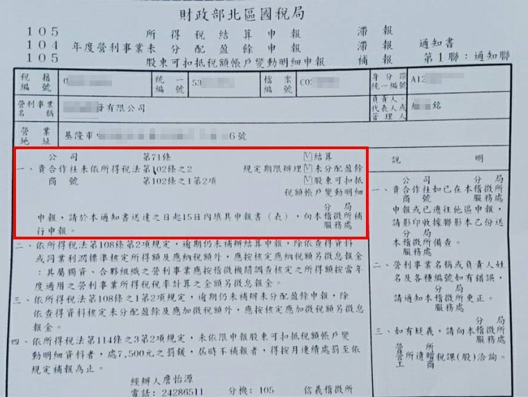
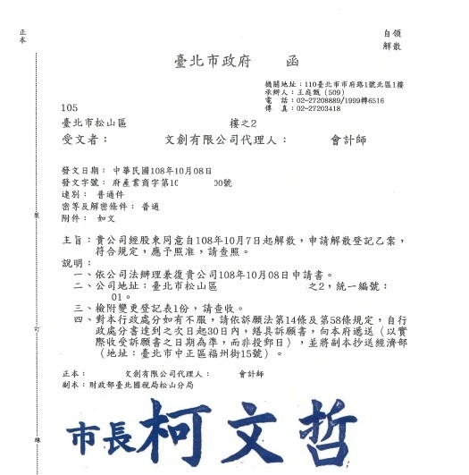
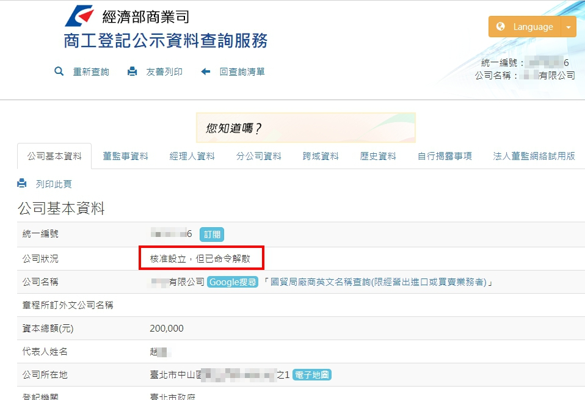

公司老闆常因某些因素想“休息一下”，該辦停業好還是解散好呢？
公司登記狀態除了一般常見的核准設立、解散外，停業、撤銷、命令解散、廢止等都算是公司登記公示資料裡的公司狀態，差別為何分述如下？
一、停業：
公司可能基於門市租約到期重新找新門市的空檔，或因後市行情不佳，或因老闆想休息一下， 而暫時不對外營業、暫時沒有銷售收款時，可以考慮進行停業申請。 等到需有恢復營業時，可以再申請復業。 有下列注意事項供參考：
- 停止營業前必需申請
- 停業當期的營業稅仍需申報
- 停業期間僅營業稅不需申報，仍需依規定辦理結算申報(營所稅)、扣免繳申報，以免遭受處罰
- 停業期最長為1年，期限屆滿可以視情況選擇展延或復業
- 復業也是要申請的，需於復業後15日內申請復業登記

↑ 圖示為停業期間未依規定辦理結算申報收到國稅局的滯報通知。
二、解散：
若公司經營不善、或老闆業務繁忙分身乏術以至於要結束公司不再經營時，可以與股東商量考慮解散公司。 公司解散後，是不能再恢復的，請務必注意。 有下列注意事項供參考：
- 公司之解散登記，在有限公司需經全體股東同意
- 公司之解散登記，在股份有限公司經股東會決議（由代表已發行股份總數三分之二以上股東出席，以出席股東表決權過半數同意行之）
- 公司解散後即應依公司法第24條規定辦理清算，且向主管機關申請解散登記，並經核准，既告確定，不得申請恢復原登記。
- 在稅務上，應依規定填發扣繳憑單，並於10日內向該管稽徵機關辦理申報
- 應於15日內完成營業稅申報
- 應於45日內完成決算申報
- 應於清算結束之日起30日內辦理清算申報。

↑ 圖示為公司登記機關核發之解散核准公文。
三、撤銷：
公司被撤銷登記，通常是因為自始存在違法情事或設立/變更登記過程不合規定，導致主管機關或法院依法撤銷其法人資格（效力視同自始無效）。
常見的具體事由包括：
- 資本額虛偽或抽回股款
- 設立或登記事項涉及偽造文書
- 股東會決議被法院撤銷
四、命令解散：
公司被命令解散（強制解散）主要分為主管機關命令解散與法院裁定解散兩種，常見的法定原因如下：
- 主管機關（如經濟部）命令解散的原因
- 設立後長期未營業：公司設立登記後，超過 6 個月尚未開始營業。
- 自行停止營業過久：公司開始營業後，自行停止營業連續滿 6 個月以上（但有正當理由經向主管機關申報者不在此限）。
- 登記後未辦理清算/逾期未解散登記：公司有其他法定解散事由，卻未依規定辦理。
- 公司登記事項有虛偽情事
- 法院裁定解散的原因（由股東或利害關係人聲請）
- 公司經營發生重大困難或僵局：例如股東之間長期意見不合、派系衝突，導致股東會或董事會無法正常運作，嚴重損害公司及股東權益時，繼續經營已顯無實益。
- 公司財產顯著不足抵償負債：面臨嚴重虧損或破產邊緣
- 其他重大事由：依公司法相關規定，法院審酌後認為有解散必要。

↑ 圖示為因自行停止營業6個月以上，以至於遭公司登記機關命令解散之公示登記資料。
五、廢止：
實務上，公司登記被主管機關「廢止」，主要是因為公司有嚴重的違法行為，或是長期沒有正常營運，由政府機關依法強制剝奪其合法登記的資格。（效力自廢止之日起向後失效）
公司登記會被廢止的核心原因主要有以下幾點：
- 違法經營受「勒令歇業」處分確定
- 公司設立後未營業或自行停業過久
- 法院裁定命令解散而未辦理
觀念釐清：廢止、撤銷、解散有何不同？
許多人常把這幾個詞搞混，但在法律上的意義與發生起因完全不同：
| 狀態 | 核心原因 | 法律性質 |
|---|---|---|
| 解散 | 多為自願或程序前提：如股東會決議不再經營（任意解散），或因公司合併、破產（法定解散）。 | 公司主動或依程序步入消滅階段。 |
| 撤銷 | 自始不合法：例如公司在設立時，資本額是虛偽不實的（虛報資本），或是申請文件偽造變造，經法院有罪判決確定後，主管機關將其登記「撤銷」，使其溯及既往失效。 | 處罰「一開始就不該存在的登記」。 |
| 廢止 | 事後違法或不營業：一開始設立完全合法，但後來發生違法被勒令歇業，或超過半年不營業等法定原因，主管機關決定從廢止那一刻起，取消其登記效力。 | |
| 處罰「後來的違法或怠惰行為」。 |
重要提醒：無論公司是被「解散」、「撤銷」還是「廢止」登記，公司的法人格都不會立刻消失。公司都必須依法進入清算程序（清償債務、分配賸餘財產），直到向法院聲報清算完結後，這家公司在法律上才算真正消失。且一旦被廢止或解散，就無法再恢復營運，若想繼續做生意必須重新註冊新公司。